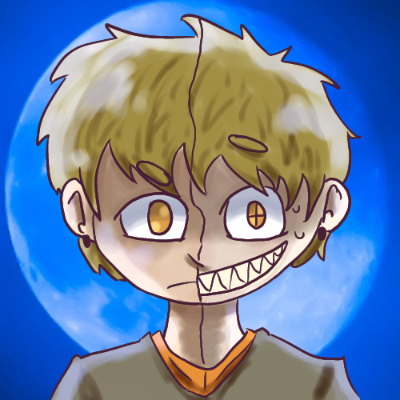

QUITTER
Voices in your head got you feeling like you're going crazy? Hope can relate... on a demonic level.

After waking up in the forest with a new body-sharing roommate, a delinquent vigilante must outrun a cult with her family while maintaining justice.

After getting a demon trapped inside of her that has little to
no interest in helping her on her pursuit of "justice," a
violence-seeking vigilante high school girl goes on an adventure
across the country to both run from a cult hunting her down and
attempt to find a way to get this shape-shifter out of her.
Dark humor, family conflicts, mystery elements,
secrets, internal struggles for control. This is what Quitter provides
to televisions/streaming services everywhere. In the outside world,
there's characters looking to harm the main character. Everything is
always trying to wrong her, but she's always ready to fight back. The
world is a dark, mysterious place, and the realm of this show may even
go beyond this human realm... and into the twisted world where this
shape-shifter came from. It's essentially Batman if Batman was a
vigilante teenage anti-hero who also has a demon-thing trapped inside
of her, and she moves around a lot.
What inspired me
to write this story is this whole situation where my aunt and mom
thought I was possessed when I was around 13-14. I also really like
Batman: The Animated Series and Gravity Falls, and this is kind of my
ship-child of the two.
✶✶✶✶✶✶✶✶✶✶✶
Thank
you, by the way, for even taking the slightest amount of interest in
my story to keep reading this far. I've spent a long time working on
this story so having anyone want to read it makes me happy. If you
liked it or hated it, I'd love to know.
Despite what
you may think, this story has nothing to do with Jujutsu Kaisen.